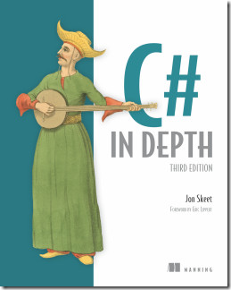

|  |
C# In DepthThe book is written by Jon Skeet (the guy Number One at StackOverflow) and is a purely about the C# language. It distances itself from the .NET framework and libraries supplementing the framework. |
|---|---|
|
I’ve been writing C# code for more than 3 years by now and yet had a lot to learn from the book. Structure of the book follows C# language versions. This isn’t particularly useful if you are trying to learn the language by reading this book after some other introductory book. But for software professionals, though, it could be a joy, since it takes you through your years of experience with the language. It tends to remind you about times when something wasn’t possible and later it became possible. Kind of nostalgia, I would say. Jon is very pedant when it comes to defining anything. This, of course, is double sided: very good when you have strong knowledge and understand components of the definition, but, unfortunately, it complicates understanding. There were some places in the book which I had to read few times to completely understand. Just for instance, in a chapter about Covariance and Contravariance: […] the gist of the topic with respect to delegates is that if it would be valid (in a static typing sense) to call a method and use its return value everywhere that you could invoke an instance of a particular delegate type and use its return value, then that method can be used to create an instance of that delegate type.Conclusion
In my opinion, the best two books ever for C# programmers are
This book could not teach you to write code on C#, but it could help you to write much more better code on C#. So I highly recommend reading it. |
|